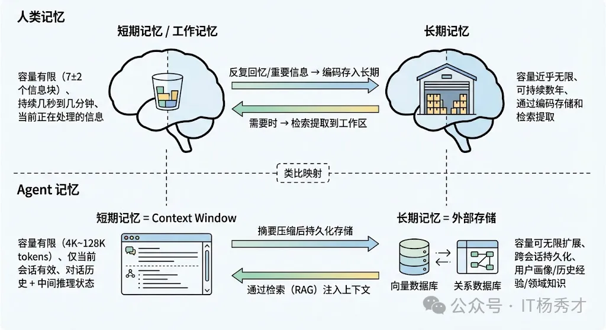
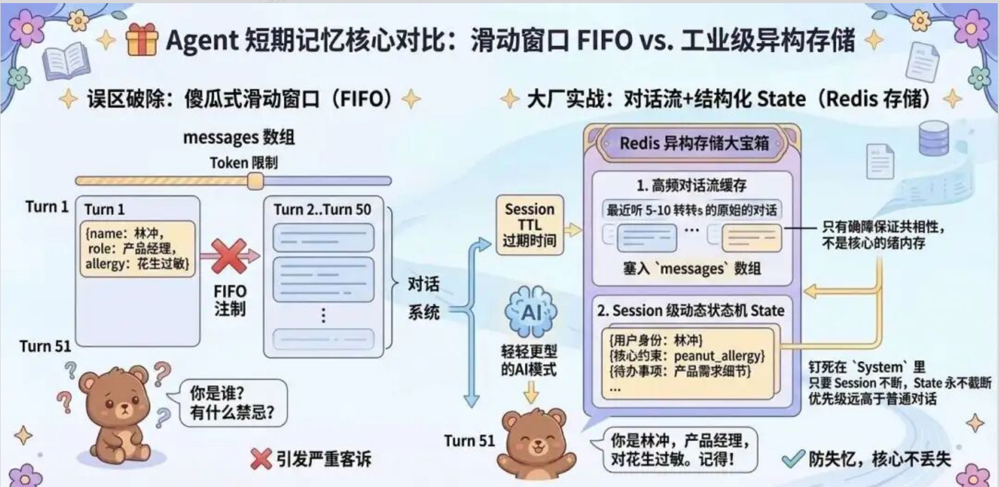
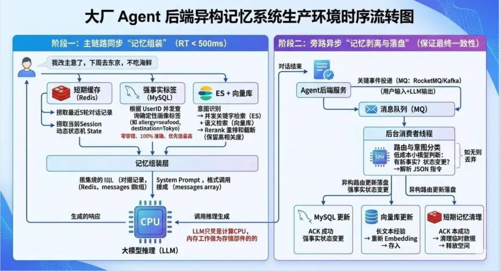
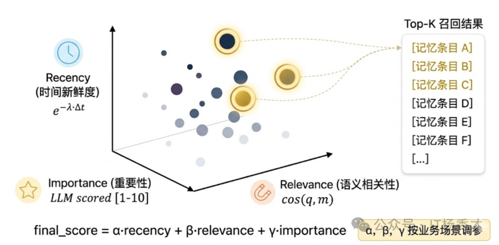

🧠 记忆模块的重要性
记忆模块是 Agent 四大核心组件之一（其余三个是 LLM 大脑、规划模块、工具使用）。如果说 LLM 是 Agent 的推理引擎，那么记忆模块就是支撑这个引擎持续运转的"燃料仓库"。
一个没有记忆的 Agent，每次对话都是从零开始的"失忆者"——它不知道用户之前的偏好、不记得上次任务的经验、也无法积累领域知识。而有了记忆模块，Agent 就能表现出"越用越聪明"的特性，成为一个真正有积累的智能助手。
🧬 人类记忆的类比
Agent 的记忆系统设计，其实是从认知科学中借鉴过来的。人类的记忆大致分为两类：
- 工作记忆（Working Memory）：容量有限，持续时间短。对于你在思考中需要临时存储的信息，比如你正在解决的问题、你正在考虑的选项等，工作记忆就是你正在使用的记忆。
- 短期记忆（Short-term Memory）：容量有限，持续时间短。比如你听到一个手机号码，能暂时记住但过一会儿就忘了。
- 长期记忆（Long-term Memory）：容量几乎无限，能持续很长时间。比如你的名字、骑自行车的技能、上周开会的内容。
把这个类比映射到 Agent 身上就非常自然了：
| 人类记忆 | Agent记忆 | 核心问题 |
|---|---|---|
| 短期记忆 | 当前对话的上下文信息 | 上下文窗口有限怎么办？ |
| 长期记忆 | 跨对话持久化存储的知识 | 信息怎么存、怎么检索、怎么更新？ |

💡 多轮对话的实现
所有大模型API都是"无状态"的——说白了，模型本身没有记忆，也不记你上一轮说了啥，每次请求都是独立的。目前行业内通用的解决方案是维护一个叫 messages 的对话数组，里面只存两种角色的内容：
- user：用户问的问题
- assistant：模型答的内容
每一轮对话都走固定流程：追加用户问题 → 把完整笔记传给模型 → 拿回回复再追加进笔记，循环下去就是连贯的多轮对话。
|
|
|
|
📋 工作记忆：上下文窗口的管理
Agent 的工作记忆，最直接的载体就是 LLM 的 Context Window（上下文窗口）。每次调用 LLM 时，我们把之前的对话历史、系统提示词、工具调用记录等信息拼接成一个 prompt 发给模型，模型就是基于这些"工作记忆"来理解当前状态并做出决策的。
⚠️ 上下文窗口的核心挑战
Context Window 的容量是有限的。即使现在的模型已经支持 128K 甚至更长的上下文，在实际 Agent 场景中，上下文很容易就被撑满：
- 一个复杂任务可能需要十几轮工具调用
- 每轮的 Thought、Action、Observation 加起来可能就有上千 token
- 再加上系统提示词和工具定义，上下文窗口很快就不够用了
而且即使窗口足够大，研究表明模型在处理超长上下文时会出现 “Lost in the Middle"现象——对上下文中间位置的信息关注度明显下降。
所以工作记忆的核心挑战是：如何在有限的上下文窗口里，尽可能保留最有用的信息？
🔧 滑动窗口（Sliding Window）
滑动窗口是最简单粗暴的方案。给messages数组设个长度上限，当对话历史超过窗口限制时，直接截断最早的消息，只保留最近的 N 轮对话。
目前也有一种动态滑动窗口：不固定对话轮数，按token数动态调整，只保留最近的对话内容，保证注入的token数不超过窗口上限的70%，预留空间给系统提示、工具返回结果、当前query。
优点： 实现简单
缺点： 信息丢失严重——可能用户在第一轮告诉了 Agent 一个关键信息，到了第十轮就被截掉了，Agent 完全"忘"了这件事
📝 对话摘要（Conversation Summary）
对话摘要是一种更优雅的方案。当对话历史变长时，不是直接截断，而是用 LLM 把较早的对话内容压缩成一段摘要，然后用这段摘要+最近对话替代原始的冗长历史。
这种方式既控制了 token 用量，又保留了关键信息。LangChain 中的 ConversationSummaryMemory 和 ConversationSummaryBufferMemory 就是这种策略的实现：
- 优点：只对更早的对话做摘要压缩，保留核心信息，兼顾了近期对话的完整性和历史信息的保留，Token消耗骤减
- 缺点：需要额外的 LLM 调用来做摘要压缩，可能增加推理时间
📐 Token Buffer（Token 缓冲区）
Token Buffer 则是按 token 数量来精确控制。设置一个 token 上限，比如 4000 token，当历史消息的总 token 数超过这个值时，从最早的消息开始逐条丢弃，直到总量回到阈值以内。
优点：比简单的轮次截断更精确
缺点：本质上还是"先进先出"的淘汰策略，可能丢失重要信息
📌 基于重要度的选择性保留
还有一种更精细的做法——不是简单地按时间顺序淘汰，而是评估每条历史消息的"重要程度”。
比如：
- 包含用户需求的消息比闲聊更重要
- 工具调用失败的经验比成功的记录更重要
- 用户明确纠正 Agent 的信息比普通对话更重要
优先保留重要的、淘汰次要的。
优点：效果最好，最大化利用有限的上下文窗口
缺点：实现最复杂，通常需要额外的 LLM 调用来做重要度评估
🔄 Map-Reduce 模式：分块处理与并行计算
针对超长文档、超长上下文的处理，采用Map-Reduce模式，先把长文档分块，让大模型并行处理每个分块，得到多个中间答案，最后再用一次 LLM 把中间答案合并成最终答案，完美适配长文档总结、全文检索的场景。
⏰ 短期记忆：承载会话的完整历史
这一层的作用时在工作记忆的上下文窗口不够用时，提供快速的补充检索。
🏭 工业级异构存储
在真实的工业级落地里，短期记忆绝对不能靠 “傻瓜式截断”。落地标准，是在 Redis 里维护两层结构化存储，从根源上解决核心信息丢失的问题：
- 高频对话流缓存：固定保留最近 5-10 轮的完整原始对话，带 Session 级别的 TTL 过期时间，直接塞进 messages 数组，保证对话的上下文连贯性，这一层只负责 “连贯”，不负责 “核心记忆”。
- Session 级动态状态机 State：后台用轻量小模型，实时增量抽取当前会话里的关键实体、核心约束、用户身份、待办事项、禁忌规则，结构化后钉死在 System Prompt 里。只要 Session 不断，这个 State 就会全程跟着对话走，永远不会被滑动窗口截断，优先级远高于普通对话内容。

💾 长期记忆：跨会话的持久化知识系统
如果说短期记忆解决的是"当前对话怎么记"的问题，那长期记忆解决的就是"跨对话怎么记、怎么用“的问题。
长期记忆让 Agent 可以记住：
- 用户的偏好（“我喜欢简洁的代码风格”）
- 历史交互的经验教训
- 领域专有知识
使其表现得更像一个"有积累"的助手，而不是每次对话都从零开始的"失忆者”。
从认知科学的角度，长期记忆又可以细分为两类：
- 显式记忆（Explicit Memory）：可以明确表述的事实和事件，比如"用户 A 喜欢 Python"
- 隐式记忆（Implicit Memory）：内化在模型行为中的模式和技能，对应到 LLM 领域就是通过微调融入模型参数中的知识
🔍 向量数据库 + RAG（检索增强生成）
这是目前主流的长期记忆方案。
核心思路：
- 把需要长期记忆的信息（对话历史摘要、用户画像、领域文档等）通过 Embedding 模型转化为向量
- 存入向量数据库（如 Milvus、Pinecone、Chroma、Weaviate 等）
- 当 Agent 需要使用这些记忆时，先把当前问题也转化为向量
- 在向量数据库中做相似度检索，找出最相关的记忆片段
- 注入到当前的上下文中供 LLM 参考
本质： 把长期记忆的"存"和"取"都转化成了向量空间中的操作
优势： 检索是语义级别的，即使用户的问法和存储时的原文表述不同，只要语义相近就能检索到
🗄️ 关系型数据库 / KV 存储
适合存储结构化的记忆信息。
比如用户画像这类高度结构化的数据：
|
|
用关系型数据库存储比向量数据库更合适，因为可以精确查询而不是模糊的语义匹配。
实际项目中： 往往是向量数据库和关系型数据库配合使用
- 结构化信息用 MySQL/PostgreSQL 存
- 非结构化的语义信息用向量数据库存
🧩 知识图谱（Knowledge Graph）
知识图谱是另一种重要的长期记忆载体，特别适合存储实体之间的关系。
比如：
- “张三是产品经理”
- “张三负责 A 项目”
- “A 项目依赖 B 服务”
这类关系型知识，用图结构来存储比纯文本向量化更自然。Agent 在推理时可以通过图查询来获取结构化的关系信息，辅助决策。
常用图数据库： Neo4j、TigerGraph
📚 模型微调（Fine-tuning）
模型微调是一种"隐式“的长期记忆方案。
通过在特定领域的数据上对模型进行微调，领域知识就被"烧"进了模型参数中，变成了模型的”肌肉记忆"。
| 方案 | 优点 | 缺点 |
|---|---|---|
| 向量数据库+RAG | 更新灵活、可实时增删 | 推理时需要额外检索步骤 |
| 模型微调 | 推理时不需要额外步骤 | 更新成本高，每次知识更新都需要重新微调 |
🏢 异构混合存储架构
长期记忆方案，不能纯向量库，而是一套异构混合存储架构，不同类型的记忆，用不同的存储承载，严格划分优先级，从根源上规避幻觉风险。
- 强事实结构化数据：用户基础信息、手机号、过敏史、明确禁忌、确定性标签等零容错数据，用关系型数据库存储。召回优先级最高，必须 100% 准确，结果不可被推翻。
- 半结构化长文本：历史对话总结、长文本需求、过往方案、关键字强相关内容，用 BM25 算法做精确召回，召回优先级高（关键字匹配准确率远超单纯向量检索）
- 非结构化模糊语义数据：比如发散性经验、聊天风格、情绪片段、隐性偏好等无法结构化的内容，仅做语义补充，用向量数据库存储。召回优先级最低，允许有误差。
整个流程分为两大阶段，严格遵循 “读写分离、同步读、异步写” 的分布式架构原则，既保证接口 RT 达标，又保证记忆数据的最终一致性。

📥 主链路同步“记忆组装”
- 查短期缓存（Redis）：根据 SessionID，优先去 Redis 捞取最近 5 轮的完整对话记录，以及当前 Session 的动态状态机 State，这一步保证核心信息不丢失，对话上下文连贯。
- 查强事实标签（MySQL）：根据 UserID，并发去 MySQL 查询用户的确定性画像标签，比如 allergy=seafood、destination=Tokyo，这部分数据零容错，必须 100% 准确，优先级最高。
- 查经验与补充知识（ES + 向量库）：对用户输入做意图识别，如果涉及历史经验查询，同时向 ES 发起关键字检索、向向量库发起语义检索，两路结果返回后，做 Rerank 重排和截断，只保留高相关度的内容。
- Prompt 组装与大模型调用：把 MySQL 的强事实标签、ES / 向量库的检索结果，按优先级塞进 System Prompt 里，把 Redis 里的短期对话塞进 messages 数组，统一格式化后，再传给 LLM 做推理生成。
在主链路上，大模型只是一个 “没有感情的计算 CPU”，真正的记忆提取、过滤、排序工作，全是由 Redis、MySQL、ES 这些成熟的存储组件并发完成的，这也是控制 RT、降低幻觉的核心。
📤 旁路异步"记忆剥离与落盘"
异步记忆更新
采用完全异步的事件驱动架构，主线程只负责核心对话链路，记忆更新全走旁路，不影响主接口响应。
- 关键事件投递（MQ）：主链路拿到用户的输入和 LLM 的输出后，直接打包丢进 RocketMQ/Kafka，主线程立刻给用户返回结果，不做任何额外的耗时操作。
- 路由与意图分类：后台消费者线程拉取 MQ 消息，通过一个低成本的轻量小模型做判断：这句话里有没有包含需要长期记住的新事实、有没有状态变更？如果没有，直接丢弃；如果有，就解析成标准的结构化 JSON 指令。
- 异构路由更新落盘：根据解析后的指令，给不同类型的记忆，路由到对应的存储做更新：
- MySQL 更新：针对强事实状态变更，直接执行 UPDATE 操作，比如更新用户的饮食禁忌、出行目的地
- 向量库更新：如果是长文本的发散性经验，重新做 Embedding（向量化）后存入向量库；
- 短期记忆清理：长期记忆落盘成功后，通过 ACK 机制，清理 Redis 中不必要的临时数据，释放缓存空间。
⚡ 事件驱动的惰性更新机制
在对话流中引入轻量级的意图识别，只有当识别到特定的 “状态变更”“新事实新增” 事件时，才异步丢进 MQ，触发记忆的解析和落盘。这套方案，能把记忆更新的算力成本降低一个数量级，同时彻底避免了无效的存储读写，这就是后端架构里经典的 “读写分离、惰性更新” 思想，在 Agent 领域的完美落地。
🛡️ 一致性兜底
如果在异步更新的过程中，MQ 消息积压了，导致用户下一次提问时，大模型取到了旧的长期记忆，给出了错误的回复，本质上就是分布式系统里经典的 “数据一致性” 问题。
- 核心兜底：会话内状态永久优先：同一个 Session 内，用户新提交的状态变更，会直接写入 Session 级 State，优先级永久高于长期记忆的旧数据。哪怕长期记忆还没更新，主链路也会优先读取 Session 内的最新状态。
- 双写缓存临时兜底：触发状态变更时，除了丢 MQ 异步更新 MySQL，同时会把新状态写入 Redis 临时缓存，设置 5 分钟短 TTL。主链路读取时优先读 Redis 临时状态，待 MQ 消费 ACK 后再清理临时缓存。
- 关键数据同步更新，非关键数据异步更新：过敏史、手机号、安全禁忌这类零容错数据，直接同步更新 MySQL，不经过 MQ 异步，保证更新成功后再返回；非核心偏好走异步更新，兼顾一致性与性能。
- 版本号乐观锁 + 重试补偿机制：给用户记忆数据加上版本号，每次更新必须匹配版本号才能成功；消费失败的消息进入重试队列，同时给数据加上 “待更新” 标记，主链路读到标记时触发补偿查询。
🚀 进阶优化方案
- 图数据库补充实体关系存储：除了结构化数据库，还会引入 Nebula、Neo4j 等图数据库，存储用户实体之间的关联关系，比如 “用户 A 的母亲是 B，B 对海鲜过敏，同行人包括 B”，解决多实体关联的记忆召回问题，比关系型数据库和向量库更适配。
- 标量过滤 + 向量检索的混合查询：不是完全放弃向量库，而是给向量数据加上结构化标量标签，检索时先按 UserID、记忆类型做标量过滤，缩小检索范围，再做语义检索，极大降低召回错误的概率。
- 实时 + 离线双链路更新：除了实时事件驱动的状态更新，还会通过离线大数据分析，挖掘用户的隐性偏好批量更新用户画像，补充实时链路无法覆盖的隐性记忆。
- 记忆生命周期分级管理：不会永久存储所有记忆，给不同类型的记忆设置分级 TTL，严格控制存储成本。
⚙️ 记忆的写入、检索与更新机制
光有存储方案还不够，一个完善的记忆系统还需要设计好三个核心机制：
🖊️ 写入机制
最常见的做法是在每轮对话结束后，由一个专门的"记忆管理模块“来判断当前对话中是否有值得长期保存的信息。
比如：
- 用户明确表达了某个偏好（“我喜欢用 Python”）
- Agent 完成了一个任务并积累了经验教训
- 用户提供了重要的背景信息
写入之前： 通常需要做一次摘要提炼，把冗长的对话内容压缩成简洁的记忆条目，避免存储大量冗余信息。
🔎 检索机制
最关键的问题是”检索的时机和精度"。
时机上： Agent 在开始处理每个新任务时，都应该先从长期记忆中检索与当前任务相关的历史信息，把它们注入到短期记忆（上下文）中。
精度上： 最朴素的做法是纯向量相似度检索——把当前 query embedding 之后去向量库里找最近邻。但在实际场景中，光靠语义相似度远远不够。斯坦福那篇经典的 Generative Agents 论文给出了一个非常优雅的三维评分模型，在实际项目中也可以沿用这个思路：
- Recency（时近性）——越近的记忆越容易被想起。人类如此，Agent 也应该如此。实现上通常用指数衰减函数：距离当前时间越远的记忆，分数衰减越多。这保证了 Agent 在近期行为上的连贯性，不会突然跳回一个月前的上下文。
- Relevance（相关性）——和当前任务语义上越相关的记忆越应该被召回。这就是向量相似度检索擅长的部分。通过 Embedding 模型将 query 和记忆条目都映射到同一个向量空间，用余弦相似度衡量相关程度。
- Importance（重要性）——有些记忆本身就比其他的更重要，不管它是否是近期的、是否和当前 query 直接相关。比如"用户是 VIP 客户"这条信息可能在很多场景下都应该被召回。重要性评分通常在记忆写入时由 LLM 打分确定，也可以根据该记忆被引用的频率动态调整。

还可以结合：
- 元数据过滤在做向量检索之前，先按用户 ID、记忆类型、时间范围等结构化字段筛掉一大批不相关的条目，缩小搜索空间。
- 二阶段检索 类似RAG的思路，第一阶段用向量相似度从大库中粗召回 Top-50，第二阶段用交叉编码器（Cross-Encoder）对这 50 条做精排，最终取 Top-5 注入上下文。
常见组合： “向量检索召回 + 交叉编码器重排序”
🔁 更新和遗忘机制
人的记忆会遗忘，Agent 的记忆也需要。如果长期记忆只增不减：
- 存储成本会越来越高
- 过期的、错误的记忆还会干扰 Agent 的判断
常见做法：
- 为记忆条目设置时间衰减权重（越久远的记忆权重越低）
- 定期让 LLM 对记忆库做整理和去重
- 当用户明确纠正某个信息时主动更新对应的记忆条目
🏗️ 实际项目中的三层分层记忆架构
在真实的 Agent 项目中，短期记忆和长期记忆不是孤立运作的，而是协同配合形成一个完整的分层记忆架构。
💭 最内层：即时上下文
也就是当前这轮 LLM 调用的 prompt 内容，包括：
- 系统提示词
- 最近几轮的原始对话
- 从长期记忆中检索注入的相关信息
这是 Agent “当前正在想什么”。
🗃️ 中间层：会话缓存
存储当前整个会话的完整历史（不仅仅是 prompt 中的那几轮），通常用 Redis 这类内存数据库来存。
当上下文窗口装不下全部历史时，就从会话缓存中检索或摘要化处理后注入。
🏛️ 最外层：持久化存储
也就是跨会话的长期记忆，用向量数据库 + 关系型数据库 + 知识图谱等方案来承载。
当 Agent 需要调用历史经验、用户偏好、领域知识时，就从这一层检索。
🔀 信息流动
信息在三层之间是可以双向流动的：
- 沉淀：对话过程中产生的重要信息会从内层向外层（短期→长期）
- 提取：需要用到的历史知识会从外层向内层（长期→短期）
这种分层设计既保证了：
- Agent 的实时响应速度
- 近乎无限的记忆容量
🛠️ 主流框架支持
主流框架对这套架构都有很好的支持：
| 框架 | 特点 |
|---|---|
| LangChain | 提供多种 Memory 组件（ConversationBufferMemory、ConversationSummaryBufferMemory、VectorStoreRetrieverMemory 等） |
| LlamaIndex | 更侧重于通过索引结构来组织长期记忆 |
| Mem0 | 专门做 Agent 记忆管理的开源项目，提供开箱即用的记忆存储、检索、更新和遗忘机制 |
✅ 总结
| 记忆类型 | 存储位置 | 核心挑战 | 主流方案 |
|---|---|---|---|
| 短期记忆 | LLM Context Window | 窗口有限、“Lost in the Middle” | 滑动窗口、对话摘要、Token Buffer |
| 长期记忆 | 向量数据库/关系库/知识图谱 | 存/取/更新的完整生命周期 | 向量+RAG、KV存储、知识图谱、微调 |
核心要点：
- 短期记忆解决"当前对话怎么记"的问题——通过上下文窗口管理策略
- 长期记忆解决"跨对话怎么记、怎么用"的问题——通过向量检索、结构化存储、知识图谱
- 完整架构是三层分层设计：即时上下文 → 会话缓存 → 持久化存储
- 信息在三层之间双向流动：沉淀（内→外）和提取（外→内）
理解并掌握记忆模块的设计，是构建真正"有积累、有经验"的智能 Agent 的关键所在。